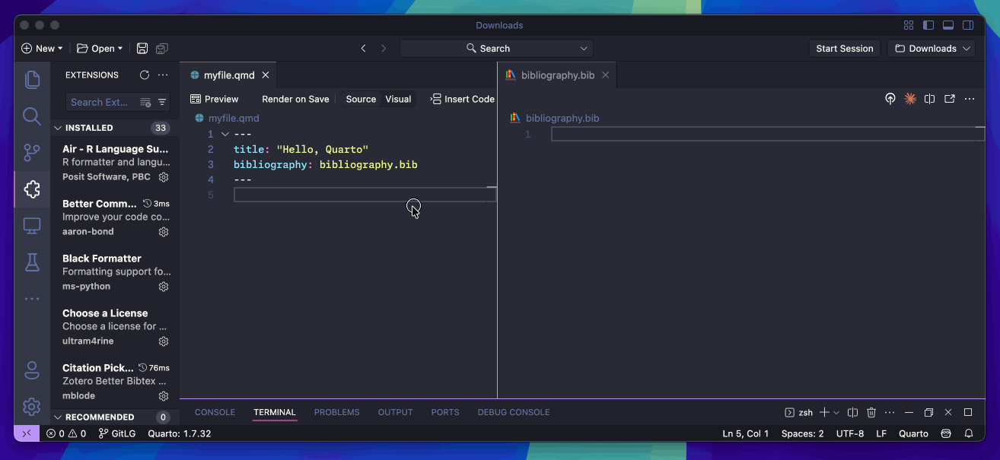
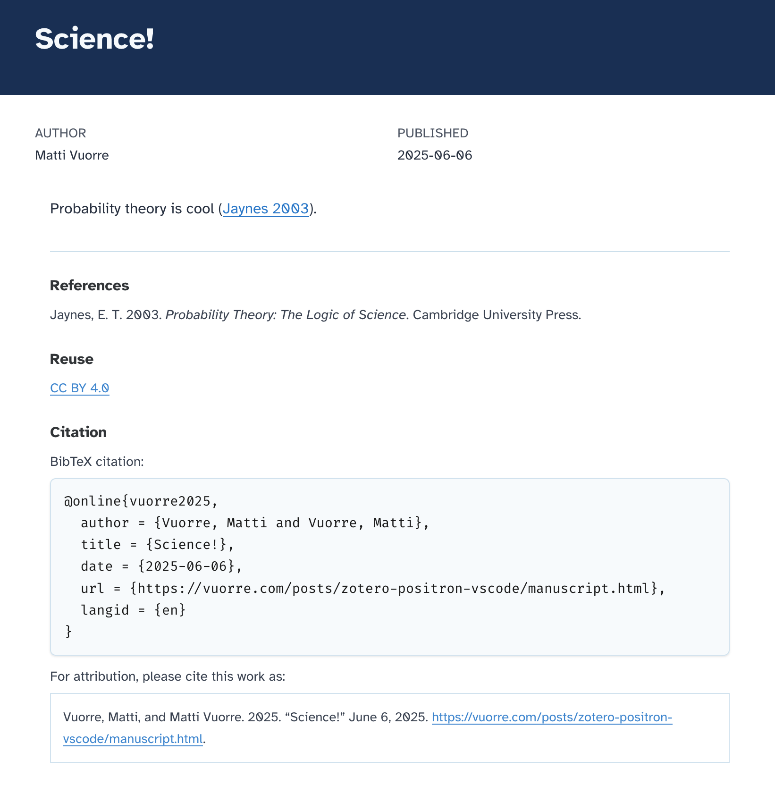
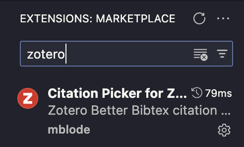
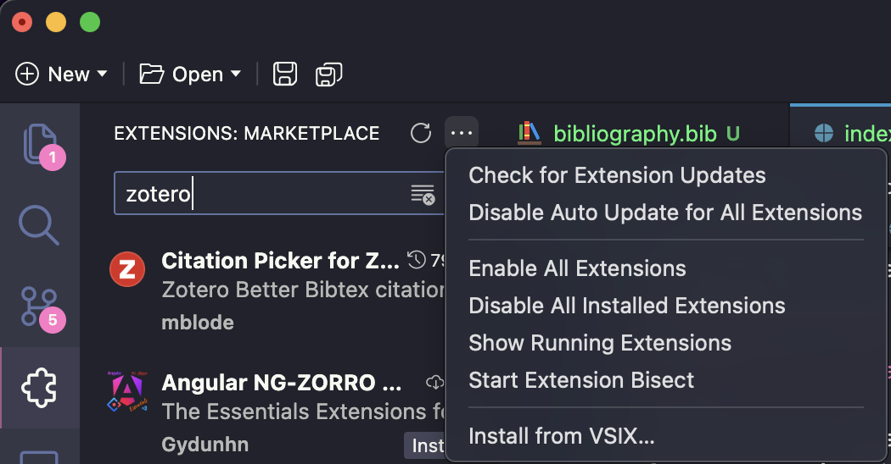
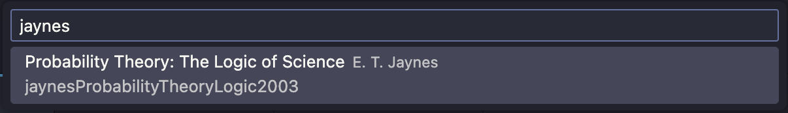

![]()
tl;dr
My version of the Citation Picker for Zotero VS Code (and Positron, etc) extension allows inserting references from Zotero to source documents and their .bib files. Here is what using it in Positron looks like:

What?
We like writing all our scientific outputs with Quarto using the Positron IDE. We also manage our references/library with Zotero, and want to insert references directly from Zotero to the Quarto documents. What does that mean?
It means that you fire up Positron, write a document like manuscript.qmd:
---
title: Science!
author: Matti Vuorre
date: 2025-06-06
bibliography: bibliography.bib
---
Probability theory is cool [@jaynesProbabilityTheoryLogic2003].and then run quarto render manuscript.qmd in your terminal. By default this creates a HTML document (but can be a PDF, Word document, or whatever) that will look like this:

Notice how the Jaynes reference is nicely dealt with both in-text and in the references section. While Positron allows easily adding citations from Zotero when editing documents in visual mode, this was less easy in source mode (which I much prefer).
How?
The vscode-zotero extension makes it easy to add in-text references to Quarto documents, and can be installed through Positron’s “Extensions” panel:

Critically, the extension does not add the entry in the document’s associated .bib file (bibliography: bibliography.bib in the document’s YAML front matter.)
How? An improved answer
So what I did was fork the extension, add this functionality, and submit a pull request. So once/if the pull request is merged you can install it as above. For now, to install the extension, go to https://github.com/mvuorre/vscode-zotero/releases/tag/v0.2.0 and download the .vsix file.
Then, in Positron, install the extension by clicking “Install from VSIX…” and select the downloaded .vsix file.

Restart Positron, ensure Zotero is running and that you have installed the Better BibTex Zotero plugin. Then, in Positron, open up your source document and ensure its frontmatter contains a reference to a bibliography file. Then place your cursor where you want the citation to appear in your document, and launch the extension’s citation picker function. On a Mac the hotkey for launching the function is Shift+Option+Z and Windows probably has one too. This brings up the citation picker UI dialog:

Typing anything in the dialog will search for items with that string, and advanced search queries like author:jaynes and author:jaynes theory work as well. Once you’ve chosen the desired citation, hit Return and the in-text citation is added to the document, and its biblatex entry is written to the document’s associated .bib file.
Done and done.
Reuse
Citation
@online{vuorre2025,
author = {Vuorre, Matti},
title = {How to Add Citations from {Zotero} to {Quarto} Documents},
date = {2025-06-06},
url = {https://vuorre.com/posts/zotero-positron-vscode/},
langid = {en}
}